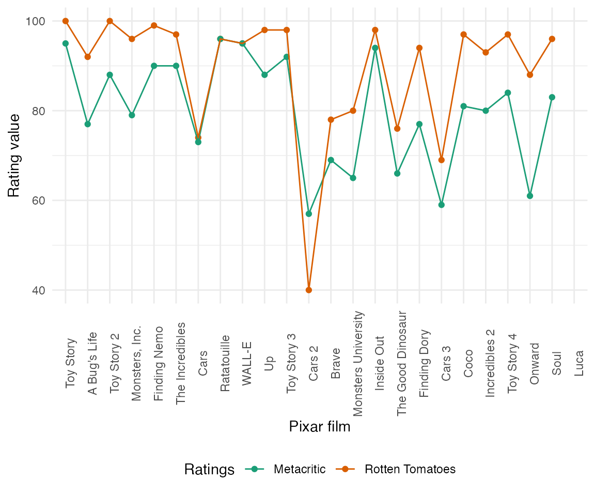
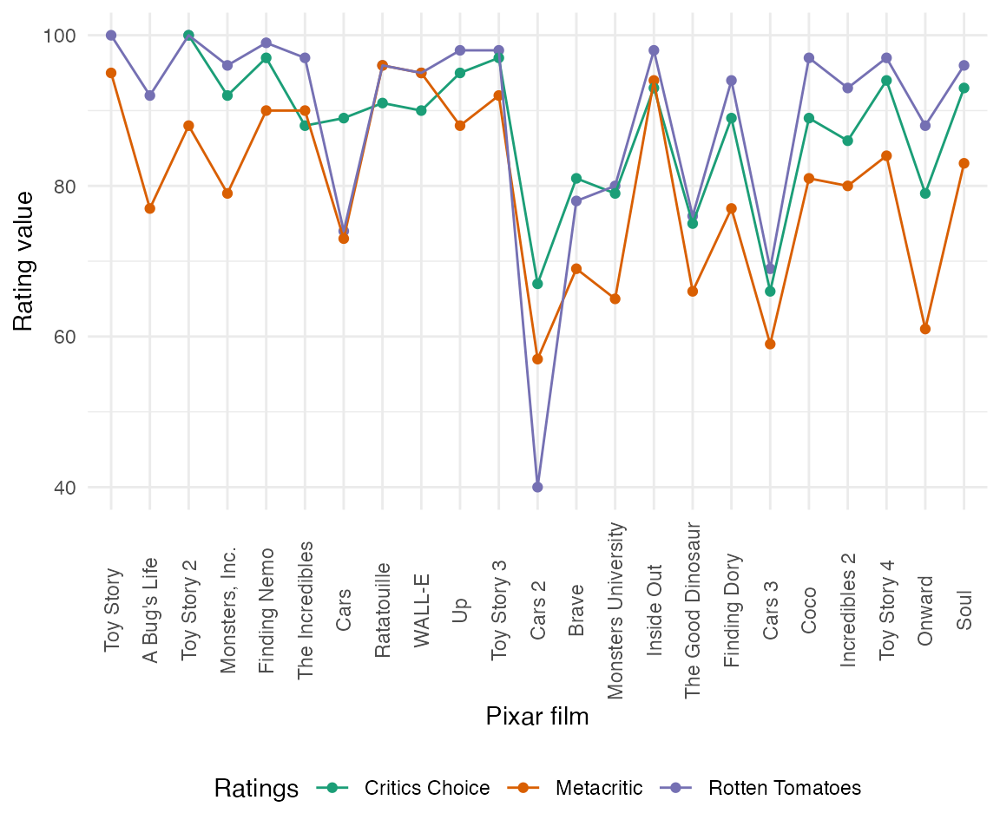

vignettes/pixar_film_ratings.Rmd
pixar_film_ratings.RmdThis vignette is to recreate an analysis on Pixar ratings that can be found here.
library(pixarfilms)
library(dplyr)
#>
#> Attaching package: 'dplyr'
#> The following objects are masked from 'package:stats':
#>
#> filter, lag
#> The following objects are masked from 'package:base':
#>
#> intersect, setdiff, setequal, union
library(tidyr)
library(forcats)
library(ggplot2)Their first plot was comparing the Pixar films’ ratings over time.
public_response %>%
select(film, rotten_tomatoes, metacritic) %>%
mutate(film = fct_inorder(film)) %>%
pivot_longer(cols = c("rotten_tomatoes", "metacritic"),
names_to = "ratings",
values_to = "value") %>%
mutate(ratings = case_when(
ratings == "metacritic" ~ "Metacritic",
ratings == "rotten_tomatoes" ~ "Rotten Tomatoes"
)) %>%
ggplot(aes(x = film, y = value, col = ratings)) +
geom_point() +
geom_line(aes(group = ratings)) +
scale_color_brewer(palette = "Dark2") +
labs(x = "Pixar film", y = "Rating value") +
guides(col = guide_legend(title = "Ratings")) +
theme_minimal() +
theme(axis.text.x = element_text(angle = 90),
legend.position = "bottom")
#> Warning: Removed 2 rows containing missing values (geom_point).
#> Warning: Removed 2 row(s) containing missing values (geom_path).
Verdict: people and critics generally agree that Cars 2 was not as good as the other Pixar films.
Next, let’s group the rating categories to see if there is a consistency across.
public_response %>%
select(film, rotten_tomatoes, metacritic) %>%
pivot_longer(cols = c("rotten_tomatoes", "metacritic"),
names_to = "ratings",
values_to = "value") %>%
mutate(ratings = case_when(
ratings == "metacritic" ~ "Metacritic",
ratings == "rotten_tomatoes" ~ "Rotten Tomatoes"
)) %>%
ggplot(aes(x = ratings, y = value, col = ratings)) +
geom_boxplot() +
ggbeeswarm::geom_beeswarm() +
ggrepel::geom_text_repel(data = . %>%
filter(film == "Cars 2" ) %>%
filter(ratings == "Rotten Tomatoes"),
aes(label = film),
point.padding = 0.4) +
scale_color_brewer(palette = "Dark2") +
guides(col = guide_legend(title = "Ratings")) +
labs(x = "Rating group", y = "Rating value") +
ylim(c(30, 100)) +
theme_minimal() +
theme(legend.position = "bottom")
#> Warning: Removed 2 rows containing non-finite values (stat_boxplot).
#> Warning: Removed 2 rows containing missing values (position_beeswarm).
Verdict: people at Rotten Tomatoes generally like Pixar films more than Metacritic, for the exception of Cars 2.
sessionInfo()
#> R version 4.0.5 (2021-03-31)
#> Platform: x86_64-apple-darwin17.0 (64-bit)
#> Running under: macOS Catalina 10.15.7
#>
#> Matrix products: default
#> BLAS: /Library/Frameworks/R.framework/Versions/4.0/Resources/lib/libRblas.dylib
#> LAPACK: /Library/Frameworks/R.framework/Versions/4.0/Resources/lib/libRlapack.dylib
#>
#> locale:
#> [1] en_US.UTF-8/en_US.UTF-8/en_US.UTF-8/C/en_US.UTF-8/en_US.UTF-8
#>
#> attached base packages:
#> [1] stats graphics grDevices utils datasets methods base
#>
#> other attached packages:
#> [1] ggplot2_3.3.3 forcats_0.5.1 tidyr_1.1.3 dplyr_1.0.5
#> [5] pixarfilms_0.2.0
#>
#> loaded via a namespace (and not attached):
#> [1] Rcpp_1.0.6 vipor_0.4.5 highr_0.9 RColorBrewer_1.1-2
#> [5] pillar_1.6.0 compiler_4.0.5 tools_4.0.5 digest_0.6.27
#> [9] evaluate_0.14 memoise_2.0.0 lifecycle_1.0.0 tibble_3.1.1
#> [13] gtable_0.3.0 pkgconfig_2.0.3 rlang_0.4.11 ggrepel_0.9.1
#> [17] yaml_2.2.1 beeswarm_0.3.1 pkgdown_1.6.1 xfun_0.22
#> [21] fastmap_1.1.0 withr_2.4.2 stringr_1.4.0 knitr_1.33
#> [25] desc_1.3.0 generics_0.1.0 fs_1.5.0 vctrs_0.3.8
#> [29] systemfonts_1.0.1 rprojroot_2.0.2 grid_4.0.5 tidyselect_1.1.1
#> [33] glue_1.4.2 R6_2.5.0 textshaping_0.3.3 fansi_0.4.2
#> [37] ggbeeswarm_0.6.0 rmarkdown_2.7 farver_2.1.0 purrr_0.3.4
#> [41] magrittr_2.0.1 scales_1.1.1 ellipsis_0.3.2 htmltools_0.5.1.1
#> [45] colorspace_2.0-0 labeling_0.4.2 ragg_1.1.2 utf8_1.2.1
#> [49] stringi_1.5.3 munsell_0.5.0 cachem_1.0.4 crayon_1.4.1